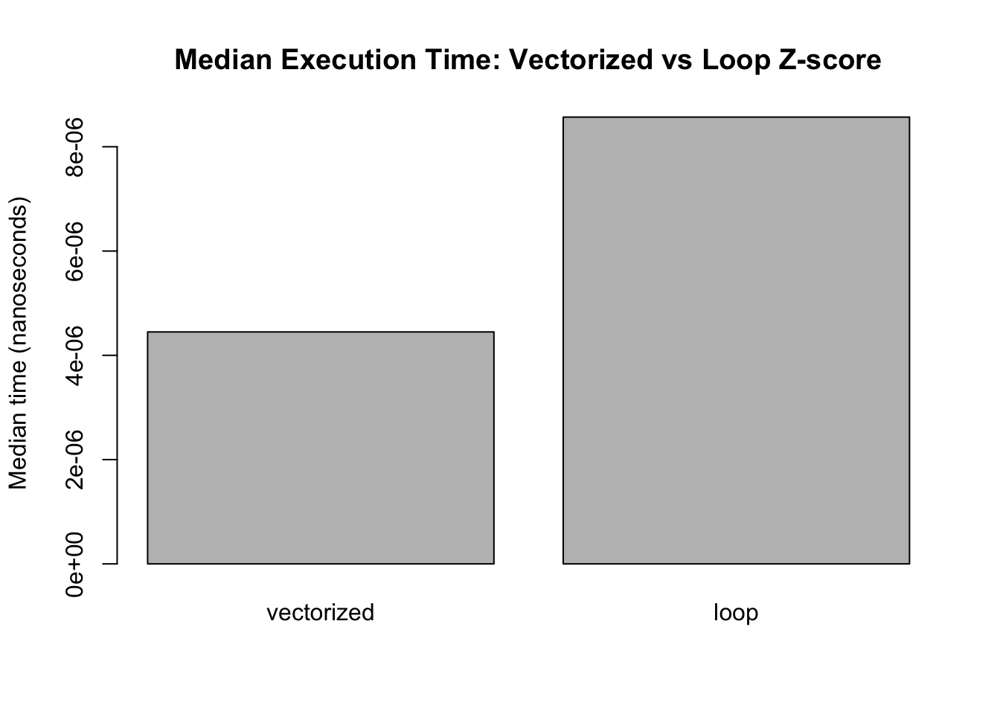
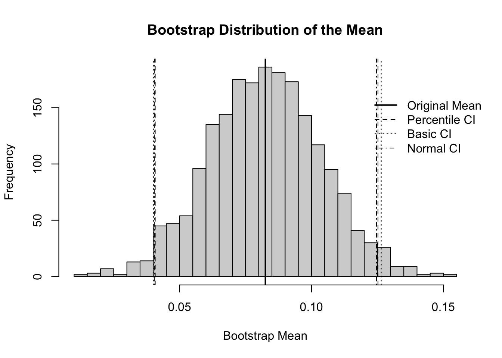
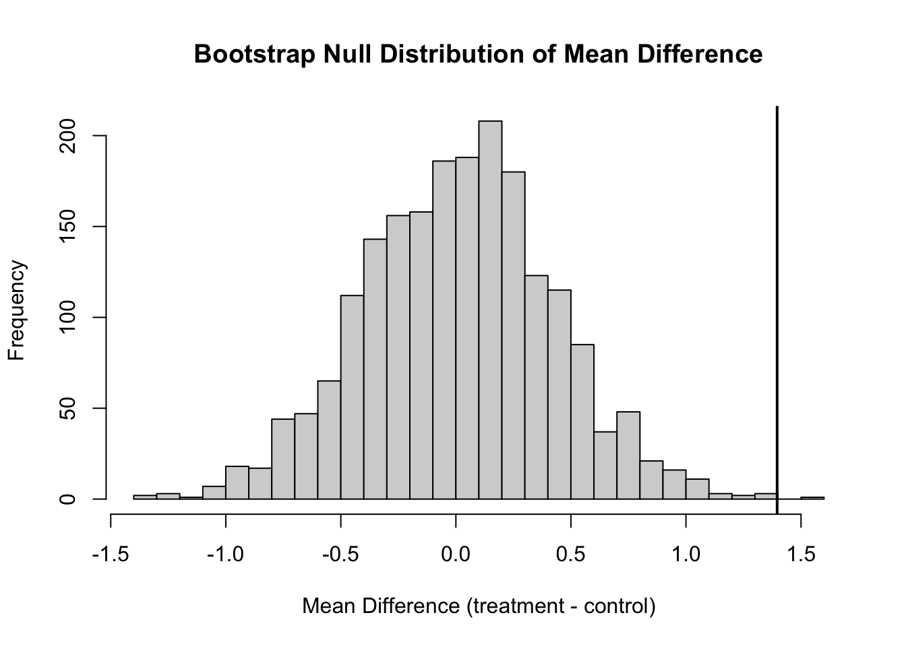

vectorized_zscore <- function(x) {
(x - mean(x)) / sd(x)
}
loop_zscore <- function(x) {
x_mean <- mean(x)
x_sd <- sd(x)
z <- numeric(length(x))
for (i in seq_along(x)) {
z[i] <- (x[i] - x_mean) / x_sd
}
z
}PHB228_hw1
Quarto
Quarto enables you to weave together content and executable code into a finished document. To learn more about Quarto see https://quarto.org.
Part 1:
1.1
a)
b)
library(bench)
bench_results <- bench::mark(
vectorized = vectorized_zscore(iris$Sepal.Length),
loop = loop_zscore(iris$Sepal.Length),
iterations = 50,
check = TRUE
)
bench_results# A tibble: 2 × 6
expression min median `itr/sec` mem_alloc `gc/sec`
<bch:expr> <bch:tm> <bch:tm> <dbl> <bch:byt> <dbl>
1 vectorized 4.06µs 4.45µs 59675. 64KB 0
2 loop 8.24µs 8.57µs 112699. 44.4KB 0median_times <- as.data.frame(bench_results)[, c("expression", "median")]
median_times$median_ns <- as.numeric(median_times$median)
barplot(
height = median_times$median_ns,
names.arg = median_times$expression,
main = "Median Execution Time: Vectorized vs Loop Z-score",
ylab = "Median time (nanoseconds)"
)
c)
library(dplyr)
Attaching package: 'dplyr'The following objects are masked from 'package:stats':
filter, lagThe following objects are masked from 'package:base':
intersect, setdiff, setequal, unionchick_summary <- ChickWeight %>%
arrange(Chick, Time) %>%
group_by(Chick) %>%
mutate(
Growth.Rate = c(NA, diff(weight) / diff(Time)),
first_weight = first(weight),
last_weight = last(weight),
Weight.Gain.Percent = ((last_weight - first_weight) / first_weight) * 100
) %>%
ungroup()
head(chick_summary)# A tibble: 6 × 8
weight Time Chick Diet Growth.Rate first_weight last_weight
<dbl> <dbl> <ord> <fct> <dbl> <dbl> <dbl>
1 39 0 18 1 NA 39 35
2 35 2 18 1 -2 39 35
3 41 0 16 1 NA 41 54
4 45 2 16 1 2 41 54
5 49 4 16 1 2 41 54
6 51 6 16 1 1 41 54
# ℹ 1 more variable: Weight.Gain.Percent <dbl>diet_summary <- chick_summary %>%
group_by(Diet) %>%
summarise(
average_growth_rate = mean(Growth.Rate, na.rm = TRUE),
mean_max_weight = mean(max(weight), na.rm = TRUE),
.groups = "drop"
)
max_weight_by_chick <- chick_summary %>%
group_by(Chick, Diet) %>%
summarise(max_weight = max(weight), .groups = "drop")
diet_summary <- chick_summary %>%
group_by(Diet) %>%
summarise(
average_growth_rate = mean(Growth.Rate, na.rm = TRUE),
.groups = "drop"
) %>%
left_join(
max_weight_by_chick %>%
group_by(Diet) %>%
summarise(mean_max_weight = mean(max_weight), .groups = "drop"),
by = "Diet"
)
diet_summary# A tibble: 4 × 3
Diet average_growth_rate mean_max_weight
<fct> <dbl> <dbl>
1 1 5.92 158.
2 2 8.32 216.
3 3 11.0 272.
4 4 8.91 230.1.2
a)
library(palmerpenguins)
Attaching package: 'palmerpenguins'The following objects are masked from 'package:datasets':
penguins, penguins_rawspecies_list <- split(penguins, penguins$species)
for (nm in names(species_list)) {
attr(species_list[[nm]], "sample_size") <- nrow(species_list[[nm]])
}
species_list$Adelie
# A tibble: 152 × 8
species island bill_length_mm bill_depth_mm flipper_length_mm body_mass_g
<fct> <fct> <dbl> <dbl> <int> <int>
1 Adelie Torgersen 39.1 18.7 181 3750
2 Adelie Torgersen 39.5 17.4 186 3800
3 Adelie Torgersen 40.3 18 195 3250
4 Adelie Torgersen NA NA NA NA
5 Adelie Torgersen 36.7 19.3 193 3450
6 Adelie Torgersen 39.3 20.6 190 3650
7 Adelie Torgersen 38.9 17.8 181 3625
8 Adelie Torgersen 39.2 19.6 195 4675
9 Adelie Torgersen 34.1 18.1 193 3475
10 Adelie Torgersen 42 20.2 190 4250
# ℹ 142 more rows
# ℹ 2 more variables: sex <fct>, year <int>
$Chinstrap
# A tibble: 68 × 8
species island bill_length_mm bill_depth_mm flipper_length_mm body_mass_g
<fct> <fct> <dbl> <dbl> <int> <int>
1 Chinstrap Dream 46.5 17.9 192 3500
2 Chinstrap Dream 50 19.5 196 3900
3 Chinstrap Dream 51.3 19.2 193 3650
4 Chinstrap Dream 45.4 18.7 188 3525
5 Chinstrap Dream 52.7 19.8 197 3725
6 Chinstrap Dream 45.2 17.8 198 3950
7 Chinstrap Dream 46.1 18.2 178 3250
8 Chinstrap Dream 51.3 18.2 197 3750
9 Chinstrap Dream 46 18.9 195 4150
10 Chinstrap Dream 51.3 19.9 198 3700
# ℹ 58 more rows
# ℹ 2 more variables: sex <fct>, year <int>
$Gentoo
# A tibble: 124 × 8
species island bill_length_mm bill_depth_mm flipper_length_mm body_mass_g
<fct> <fct> <dbl> <dbl> <int> <int>
1 Gentoo Biscoe 46.1 13.2 211 4500
2 Gentoo Biscoe 50 16.3 230 5700
3 Gentoo Biscoe 48.7 14.1 210 4450
4 Gentoo Biscoe 50 15.2 218 5700
5 Gentoo Biscoe 47.6 14.5 215 5400
6 Gentoo Biscoe 46.5 13.5 210 4550
7 Gentoo Biscoe 45.4 14.6 211 4800
8 Gentoo Biscoe 46.7 15.3 219 5200
9 Gentoo Biscoe 43.3 13.4 209 4400
10 Gentoo Biscoe 46.8 15.4 215 5150
# ℹ 114 more rows
# ℹ 2 more variables: sex <fct>, year <int>attributes(species_list[[1]])$names
[1] "species" "island" "bill_length_mm"
[4] "bill_depth_mm" "flipper_length_mm" "body_mass_g"
[7] "sex" "year"
$row.names
[1] 1 2 3 4 5 6 7 8 9 10 11 12 13 14 15 16 17 18
[19] 19 20 21 22 23 24 25 26 27 28 29 30 31 32 33 34 35 36
[37] 37 38 39 40 41 42 43 44 45 46 47 48 49 50 51 52 53 54
[55] 55 56 57 58 59 60 61 62 63 64 65 66 67 68 69 70 71 72
[73] 73 74 75 76 77 78 79 80 81 82 83 84 85 86 87 88 89 90
[91] 91 92 93 94 95 96 97 98 99 100 101 102 103 104 105 106 107 108
[109] 109 110 111 112 113 114 115 116 117 118 119 120 121 122 123 124 125 126
[127] 127 128 129 130 131 132 133 134 135 136 137 138 139 140 141 142 143 144
[145] 145 146 147 148 149 150 151 152
$class
[1] "tbl_df" "tbl" "data.frame"
$sample_size
[1] 152b)
numeric_vars <- penguins[sapply(penguins, is.numeric)]
lapply_means <- lapply(numeric_vars, mean, na.rm = TRUE)
lapply_means$bill_length_mm
[1] 43.92193
$bill_depth_mm
[1] 17.15117
$flipper_length_mm
[1] 200.9152
$body_mass_g
[1] 4201.754
$year
[1] 2008.029library(purrr)
mapdbl_means <- map_dbl(numeric_vars, ~ mean(.x, na.rm = TRUE))
mapdbl_means bill_length_mm bill_depth_mm flipper_length_mm body_mass_g
43.92193 17.15117 200.91520 4201.75439
year
2008.02907 c)
tapply(penguins$body_mass_g, penguins$species, mean, na.rm = TRUE) Adelie Chinstrap Gentoo
3700.662 3733.088 5076.016 tapply(
penguins$body_mass_g,
list(penguins$species, penguins$sex),
mean,
na.rm = TRUE
) female male
Adelie 3368.836 4043.493
Chinstrap 3527.206 3938.971
Gentoo 4679.741 5484.836d)
x <- c(1, 2, 3, 4, 5)
y <- x
y[1] <- 100
x[1] 1 2 3 4 5y[1] 100 2 3 4 5After assigning y<-x, both objects initially contain the same values, but once y is changed, R creates a separate copy for it. That is why x stays unchanged while y shows the new value.
e)
system.time({
result <- numeric(0)
for (i in 1:10000) {
result <- c(result, i^2)
}
}) user system elapsed
0.066 0.043 0.114 system.time({
result_prealloc <- numeric(10000)
for (i in 1:10000) {
result_prealloc[i] <- i^2
}
}) user system elapsed
0.001 0.000 0.001 The preallocated version runs much faster because the result vector is created once at the beginning and then filled in during the loop. In the original code, the vector keeps getting extended at every iteration, so R has to repeatedly copy it into memory. This extra copying makes the first approach much less efficient.
2.1
a)
A <- matrix(c(4, 2, 1, 5), nrow = 2)
B <- matrix(c(3, 1, 0, 2), nrow = 2)
C <- matrix(c(1, 3, 5, 2, 4, 6), nrow = 2)
A [,1] [,2]
[1,] 4 1
[2,] 2 5B [,1] [,2]
[1,] 3 0
[2,] 1 2C [,1] [,2] [,3]
[1,] 1 5 4
[2,] 3 2 6A + B [,1] [,2]
[1,] 7 1
[2,] 3 7A * B [,1] [,2]
[1,] 12 0
[2,] 2 10A %*% B [,1] [,2]
[1,] 13 2
[2,] 11 10t(A) %*% C [,1] [,2] [,3]
[1,] 10 24 28
[2,] 16 15 34solve(A) [,1] [,2]
[1,] 0.2777778 -0.05555556
[2,] -0.1111111 0.22222222b)
is_symmetric <- function(M) {
if (nrow(M) != ncol(M)) {
stop("Error: matrix must be square.")
}
all(M == t(M))
}
is_symmetric(A)[1] FALSEis_symmetric(B)[1] FALSEis_symmetric(t(A) %*% A)[1] TRUE2.2
a)
M <- matrix(c(4, 2, 2, 3), nrow = 2)
eig <- eigen(M)
eig$values[1] 5.561553 1.438447eig$vectors [,1] [,2]
[1,] -0.7882054 0.6154122
[2,] -0.6154122 -0.7882054b)
M %*% eig$vectors[, 1] [,1]
[1,] -4.383646
[2,] -3.422648eig$values[1] * eig$vectors[, 1][1] -4.383646 -3.422648M %*% eig$vectors[, 2] [,1]
[1,] 0.885238
[2,] -1.133792eig$values[2] * eig$vectors[, 2][1] 0.885238 -1.133792The results were the same in both cases, confirming that the decomposition was computed correctly.
c)
P <- eig$vectors
D <- diag(eig$values)
M_reconstructed <- P %*% D %*% solve(P)
M_reconstructed [,1] [,2]
[1,] 4 2
[2,] 2 3all.equal(M, M_reconstructed)[1] TRUEThe reconstructed matrix matched the original matrix, and all.equal() returned TRUE, so that the decomposition was correct.
2.3
a)
X <- matrix(c(3, 2, 2, 2, 3, -2, 2, -2, 3), nrow = 3)
svd_X <- svd(X)
svd_X$d[1] 5 5 1svd_X$u [,1] [,2] [,3]
[1,] -0.8164966 -1.401573e-16 0.5773503
[2,] -0.4082483 -7.071068e-01 -0.5773503
[3,] -0.4082483 7.071068e-01 -0.5773503svd_X$v [,1] [,2] [,3]
[1,] -0.8164966 0.0000000 -0.5773503
[2,] -0.4082483 -0.7071068 0.5773503
[3,] -0.4082483 0.7071068 0.5773503X_rank1 <- svd_X$d[1] * svd_X$u[, 1] %*% t(svd_X$v[, 1])
X_rank1 [,1] [,2] [,3]
[1,] 3.333333 1.6666667 1.6666667
[2,] 1.666667 0.8333333 0.8333333
[3,] 1.666667 0.8333333 0.8333333frobenius_diff <- norm(X - X_rank1, type = "F")
frobenius_diff[1] 5.09902The rank-1 approximation keeps the biggest underlying signal in the matrix, but it leaves out the remaining variation carried by the smaller singular values. That means it captures the broad overall pattern, but it misses the more detailed structure of the original matrix.
b)
set.seed(228)
n <- 100
x <- runif(n, -5, 5)
y <- 3 + 2 * x + rnorm(n, sd = 1)
X_design <- cbind(1, x)
head(X_design) x
[1,] 1 -4.53798259
[2,] 1 2.97797540
[3,] 1 2.12482973
[4,] 1 -0.59767698
[5,] 1 -1.98609306
[6,] 1 -0.02969563qr <- qr(X_design)
beta_qr <- qr.solve(X_design, y)
beta_qr x
2.985095 1.950611 lm_fit <- lm(y ~ x)
coef(lm_fit)(Intercept) x
2.985095 1.950611 all.equal(as.vector(beta_qr), as.vector(coef(lm_fit)))[1] TRUEOne advantage of QR decomposition is that it gives a more dependable way to solve the least squares problem. It avoids direct matrix inversion, which can lead to numerical problems, and instead uses a decomposition that is better behaved computationally.
3.1
a)
rosenbrock <- function(x) {
x1 <- x[1]
x2 <- x[2]
(1 - x1)^2+100*(x2 - x1^2)^2
}
rosenbrock(c(-1.2, 1.0))[1] 24.2b)
rosenbrock_grad <- function(x) {
x1 <- x[1]
x2 <- x[2]
grad_x1 <- -2 * (1 - x1) - 400 * x1 * (x2 - x1^2)
grad_x2 <- 200 * (x2 - x1^2)
c(grad_x1, grad_x2)
}
rosenbrock_grad(c(-1.2, 1.0))[1] -215.6 -88.0c)
gradient_descent <- function(init, grad_fn, fn, learning_rate = 0.001, max_iter = 10000, tol = 1e-6) {
x <- init
for (iter in 1:max_iter) {
grad <- grad_fn(x)
grad_norm <- sqrt(sum(grad^2))
if (grad_norm < tol) {
return(list(
solution = x,
value = fn(x),
iterations = iter,
converged = TRUE
))
}
x <- x - learning_rate * grad
}
list(
solution = x,
value = fn(x),
iterations = max_iter,
converged = FALSE
)
}d)
result <- gradient_descent(
init = c(-1.2, 1.0),
grad_fn = rosenbrock_grad,
fn = rosenbrock,
learning_rate = 0.001,
max_iter = 10000,
tol = 1e-6
)
result$solution[1] 0.9923558 0.9847394result$value[1] 5.852761e-05result$iterations[1] 10000result$converged[1] FALSEIt produced a final solution of approximately (0.9924, 0.9847). The function value at that point was about 5.85×10−5, and the algorithm used the full 10000 iterations allowed. Since converged returned FALSE, the stopping rule based on the gradient tolerance was not fully met before reaching the maximum number of iterations, but the final point is still very close to the true minimum at (1,1), and the function value is already quite small.
3.2
a)
bfgs_result <- optim(
par = c(-1.2, 1.0),
fn = rosenbrock,
gr = rosenbrock_grad,
method = "BFGS"
)
bfgs_result$par
[1] 1 1
$value
[1] 9.594955e-18
$counts
function gradient
110 43
$convergence
[1] 0
$message
NULLb)
NelderMead <- optim(
par = c(-1.2, 1.0),
fn = rosenbrock,
method = "Nelder-Mead"
)
NelderMead$par
[1] 1.000260 1.000506
$value
[1] 8.825241e-08
$counts
function gradient
195 NA
$convergence
[1] 0
$message
NULLBFGS gave the strongest result because it converged to essentially (1,1) with an almost zero function value and did so with relatively few evaluations. Nelder-Mead also found a point very close to the minimum, but it required more function evaluations and was slightly less accurate. My gradient descent approach improved the objective substantially, but it was much slower and did not fully converge within 10000 iterations, so it was the weakest of the three methods in both accuracy and efficiency.
3.3
a)
run_simulation <- function(n_samples, n_reps, dist_type) {
results <- data.frame(
mean = numeric(n_reps),
median = numeric(n_reps),
trimmed_mean = numeric(n_reps)
)
for (i in 1:n_reps) {
if (dist_type == "normal") {
x <- rnorm(n_samples, mean = 0, sd = 1)
} else if (dist_type == "t3") {
x <- rt(n_samples, df = 3)
} else if (dist_type == "contaminated") {
is_contam <- rbinom(n_samples, size = 1, prob = 0.10)
x <- ifelse(is_contam == 1,
rnorm(n_samples, mean = 0, sd = sqrt(10)),
rnorm(n_samples, mean = 0, sd = 1))
} else {
stop("dist_type must be 'normal', 't3', or 'contaminated'")
}
results$mean[i] <- mean(x)
results$median[i] <- median(x)
results$trimmed_mean[i] <- mean(x, trim = 0.10)
}
return(results)
}b)
set.seed(228)
sim_normal <- run_simulation(n_samples = 30, n_reps = 1000, dist_type = "normal")
sim_t3 <- run_simulation(n_samples = 30, n_reps = 1000, dist_type = "t3")
sim_contam <- run_simulation(n_samples = 30, n_reps = 1000, dist_type = "contaminated")summarize_performance <- function(sim_results, true_value = 0) {
data.frame(
estimator = c("Mean", "Median", "Trimmed Mean"),
bias = c(
mean(sim_results$mean) - true_value,
mean(sim_results$median) - true_value,
mean(sim_results$trimmed_mean) - true_value
),
variance = c(
var(sim_results$mean),
var(sim_results$median),
var(sim_results$trimmed_mean)
),
mse = c(
mean((sim_results$mean - true_value)^2),
mean((sim_results$median - true_value)^2),
mean((sim_results$trimmed_mean - true_value)^2)
)
)
}perf_normal <- summarize_performance(sim_normal)
perf_t3 <- summarize_performance(sim_t3)
perf_contam <- summarize_performance(sim_contam)
perf_normal estimator bias variance mse
1 Mean 0.002411002 0.03173076 0.03170484
2 Median 0.010896738 0.04558425 0.04565740
3 Trimmed Mean 0.002901703 0.03261186 0.03258767perf_t3 estimator bias variance mse
1 Mean -0.02597973 0.10480663 0.10537677
2 Median -0.01481375 0.05757230 0.05773418
3 Trimmed Mean -0.01592796 0.05664249 0.05683955perf_contam estimator bias variance mse
1 Mean 0.004294752 0.06343409 0.06338910
2 Median 0.010505180 0.05594051 0.05599493
3 Trimmed Mean 0.004332108 0.04158709 0.04156427perf_normal$distribution <- "Normal(0,1)"
perf_t3$distribution <- "t(df = 3)"
perf_contam$distribution <- "Contaminated Normal"
summary_table <- rbind(perf_normal, perf_t3, perf_contam)
summary_table <- summary_table[, c("distribution", "estimator", "bias", "variance", "mse")]
summary_table distribution estimator bias variance mse
1 Normal(0,1) Mean 0.002411002 0.03173076 0.03170484
2 Normal(0,1) Median 0.010896738 0.04558425 0.04565740
3 Normal(0,1) Trimmed Mean 0.002901703 0.03261186 0.03258767
4 t(df = 3) Mean -0.025979726 0.10480663 0.10537677
5 t(df = 3) Median -0.014813751 0.05757230 0.05773418
6 t(df = 3) Trimmed Mean -0.015927960 0.05664249 0.05683955
7 Contaminated Normal Mean 0.004294752 0.06343409 0.06338910
8 Contaminated Normal Median 0.010505180 0.05594051 0.05599493
9 Contaminated Normal Trimmed Mean 0.004332108 0.04158709 0.04156427c)
summary_table[order(summary_table$distribution, summary_table$estimator), ] distribution estimator bias variance mse
7 Contaminated Normal Mean 0.004294752 0.06343409 0.06338910
8 Contaminated Normal Median 0.010505180 0.05594051 0.05599493
9 Contaminated Normal Trimmed Mean 0.004332108 0.04158709 0.04156427
1 Normal(0,1) Mean 0.002411002 0.03173076 0.03170484
2 Normal(0,1) Median 0.010896738 0.04558425 0.04565740
3 Normal(0,1) Trimmed Mean 0.002901703 0.03261186 0.03258767
4 t(df = 3) Mean -0.025979726 0.10480663 0.10537677
5 t(df = 3) Median -0.014813751 0.05757230 0.05773418
6 t(df = 3) Trimmed Mean -0.015927960 0.05664249 0.05683955When the data were normal, the mean did the best, which is what we would expect since the distribution was symmetric and did not have many extreme values. In the contaminated normal setting, the 10% trimmed mean worked better because trimming helped reduce the impact of those unusual observations. For the t-distribution with 3 df, the median came out strongest, which makes sense because it is more resistant to the heavy tails. The results show that there is not one estimator that is always best.
4.1
a)
set.seed(42)
returns <- rnorm(50, mean = 0.08, sd = 0.12)
returns <- returns + rexp(50, rate = 20) - 0.05
bootstrap_mean <- function(x, B = 2000, conf_level = 0.95,
ci_type = c("percentile", "basic", "normal")) {
ci_type <- match.arg(ci_type)
n <- length(x)
alpha <- 1 - conf_level
xbar <- mean(x)
# Store bootstrap means
boot_means <- numeric(B)
for (i in 1:B) {
boot_sample <- sample(x, size = n, replace = TRUE)
boot_means[i] <- mean(boot_sample)
}
# Bootstrap standard error
se_boot <- sd(boot_means)
# CI
if (ci_type == "percentile") {
ci <- quantile(boot_means, probs = c(alpha / 2, 1 - alpha / 2))
} else if (ci_type == "basic") {
q <- quantile(boot_means, probs = c(alpha / 2, 1 - alpha / 2))
ci <- c(2 * xbar - q[2], 2 * xbar - q[1])
} else if (ci_type == "normal") {
z <- qnorm(1 - alpha / 2)
ci <- c(xbar - z * se_boot, xbar + z * se_boot)
}
list(
original_mean = xbar,
bootstrap_means = boot_means,
se = se_boot,
ci = ci,
ci_type = ci_type
)
}
boot_percentile <- bootstrap_mean(returns, B = 2000, ci_type = "percentile")
boot_basic <- bootstrap_mean(returns, B = 2000, ci_type = "basic")
boot_normal <- bootstrap_mean(returns, B = 2000, ci_type = "normal")b)
hist(
boot_percentile$bootstrap_means,
breaks = 30,
main = "Bootstrap Distribution of the Mean",
xlab = "Bootstrap Mean"
)
# Original sample mean
abline(v = boot_percentile$original_mean, lwd = 2)
# Percentile interval
abline(v = boot_percentile$ci, lty = 2)
# Basic interval
abline(v = boot_basic$ci, lty = 3)
# Normal interval
abline(v = boot_normal$ci, lty = 4)
legend(
x = 0.12,
y = 165,
legend = c("Original Mean", "Percentile CI", "Basic CI", "Normal CI"),
lty = c(1, 2, 3, 4),
lwd = c(2, 1, 1, 1),
bty = "n",
xpd = TRUE
)
I would use the percentile confidence interval. The returns are not perfectly symmetric because of the added exponential piece, so the bootstrap distribution has some skewness, and the percentile method handles that more naturally by using the resampled distribution itself. The normal interval is a bit less appealing here because it leans more on the idea of symmetry around the mean. The basic interval is still reasonable, but the percentile interval feels like the best match for data like this because it stays closer to what the bootstrap is actually showing.
4.2
a)
set.seed(123)
control <- rnorm(40, mean = 10, sd = 2)
treatment <- rnorm(40, mean = 11.5, sd = 2)
bootstrap_ttest <- function(x, y, B = 2000) {
observed_diff <- mean(y) - mean(x)
combined <- c(x, y)
n_x <- length(x)
n_y <- length(y)
boot_null <- numeric(B)
shifted_x <- x - mean(x) + mean(combined)
shifted_y <- y - mean(y) + mean(combined)
for (i in 1:B) {
x_star <- sample(shifted_x, size = n_x, replace = TRUE)
y_star <- sample(shifted_y, size = n_y, replace = TRUE)
boot_null[i] <- mean(y_star) - mean(x_star)
}
p_value <- mean(abs(boot_null) >= abs(observed_diff))
list(
observed_diff = observed_diff,
bootstrap_null = boot_null,
p_value = p_value
)
}
boot_test <- bootstrap_ttest(control, treatment, B = 2000)
boot_test$observed_diff[1] 1.396202boot_test$p_value[1] 5e-04hist(
boot_test$bootstrap_null,
breaks = 30,
main = "Bootstrap Null Distribution of Mean Difference",
xlab = "Mean Difference (treatment - control)"
)
abline(v = boot_test$observed_diff, lwd = 2)
b)
t_test_result <- t.test(treatment, control)
t_test_result
Welch Two Sample t-test
data: treatment and control
t = 3.3597, df = 77.656, p-value = 0.001212
alternative hypothesis: true difference in means is not equal to 0
95 percent confidence interval:
0.5688065 2.2235966
sample estimates:
mean of x mean of y
11.48657 10.09037 The bootstrap test and the ordinary t-test do not seem to differ much, which is what I would expect since the data were generated from normal distributions and the sample sizes are not small. Both methods point to the same general conclusion that the treatment group has a higher mean than the control group. The nice thing about the bootstrap approach is that it is less tied to strict distributional assumptions, so it can still be useful when the data are more skewed or include unusual values.